Cách viết kịch bản để dựng hình đúng theo quan hệ toán học,
điều khiển hình bằng thông số và tự kiểm tra hình bằng số đo thật.
Dùng cho ToanViet Studio 2.2.0 trở lên · Trong phần mềm: Trợ giúp ▸ Hướng dẫn lập kịch bản vẽ hình (Shift+F1)
Hình phẳng và hình không gian trong ToanViet không vẽ bằng chuột. Bạn viết một kịch bản: mỗi dòng nói một điều, phần mềm đọc từ trên xuống và dựng hình. Nhờ vậy:
Kịch bản nằm ở khung Thuộc tính bên phải khi chọn một hình phẳng (danh sách Hình phẳng) hoặc hình không gian tự dựng (nhóm lớp 11, lớp 12 trong danh sách Hình không gian). Cách nhanh nhất để bắt đầu là chọn một hình mẫu gần giống rồi sửa kịch bản của nó.
| Loại dòng | Ví dụ | Ý nghĩa |
|---|---|---|
| Thông số | a = 6 # Cạnh BC | Tên viết thường. Tạo một ô số trong mục Thông số; chữ sau # là tên của ô. |
| Điểm | A = (1, 4)M = trungdiem(B, C) | Tên viết hoa (A, B, A', A1, A_1). Cho toạ độ hoặc dựng từ điểm đã có. |
| Lệnh vẽ, ký hiệu | dagiac ABCvuong AHC | Một từ khoá rồi các tên điểm. |
# là chú thích, phần mềm bỏ qua.(x, y): x sang phải, y lên trên. Phần mềm tự co giãn cho vừa khung, nên đơn vị chỉ cần đúng tỉ lệ.A = (1, 4) B = (0, 0) C = (5, 0) dagiac ABC
Ba dòng đầu tạo ba điểm bằng toạ độ. Dòng cuối nối thành tam giác (nối A–B, B–C, C–A). Tên điểm được đặt tự động vào chỗ trống quanh điểm.
C = (5, 0) thành C = (7, 0) và xem hình đổi.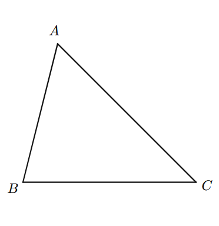
Thay vì tự tính toạ độ, hãy để phần mềm dựng điểm từ các điểm đã có. Như vậy khi đổi hình, quan hệ vẫn được giữ.
A = (2.2, 4.4) B = (0, 0) C = (7.5, 0) dagiac ABC H = chan(A, B, C) # chân đường cao từ A M = trungdiem(B, C) D = phangiac(A, B, C) # chân phân giác góc A doan AH AM AD vuong AHC bang BM MC = 1 goc BAD DAC
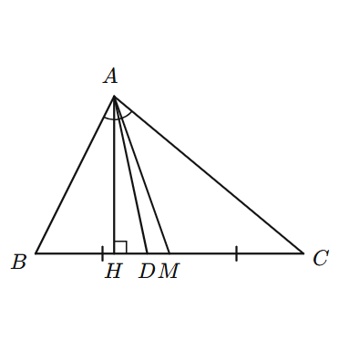
| Viết | Kết quả |
|---|---|
trungdiem(A, B) | Trung điểm AB |
chia(A, B, k) | Điểm M trên AB với AM = k·AB (k = 1/3, 0.5, 2, −1…) |
chan(M, A, B) | Chân đường vuông góc kẻ từ M xuống đường thẳng AB |
phangiac(A, B, C) | Chân đường phân giác của góc A trong tam giác ABC (nằm trên BC). Đỉnh A viết trước. |
phangiacgoc(X, A, Y) | Một điểm trên tia phân giác của góc XAY. Đỉnh A ở giữa, giống lệnh goc. |
phangiacgoc(X, A, Y, P, Q) | Giao điểm của tia phân giác góc XAY với đường thẳng PQ |
trongtam(A, B, C) · tructam · tamnoi · tamngoai | Trọng tâm, trực tâm, tâm đường tròn nội tiếp, ngoại tiếp tam giác ABC |
giao(A, B, C, D) | Giao điểm của hai đường thẳng AB và CD |
tinhtien(M, A, B) | Ảnh của M qua phép tịnh tiến theo vectơ AB |
hbh(A, B, C) | Điểm D để ABCD là hình bình hành (D = A + C − B) |
doixung(M, O) · doixungtruc(M, A, B) | Đối xứng của M qua điểm O · qua đường thẳng AB |
quay(M, O, 60) | Ảnh của M qua phép quay tâm O góc 60° (ngược chiều kim đồng hồ) |
tron(O, r, 45) hoặc tron(O, A, 45) | Điểm trên đường tròn tâm O bán kính r (hoặc OA), ở góc 45° so với chiều dương trục x |
dinh(B, C, c, b) | Đỉnh A của tam giác biết AB = c, AC = b (A ở bên trái hướng B → C) |
tiepdiem(M, O, r, 1) | Tiếp điểm của tiếp tuyến kẻ từ M tới đường tròn (O; r); số cuối 1 hoặc 2 chọn một trong hai tiếp điểm |
Tham số có thể là biểu thức: quay(A, O, so_do/2), (a/2, h), (2*cos(pi/3), 1).
Đây là chỗ người mới dễ nhầm nhất. Có hai kiểu viết góc:
| Kiểu | Lệnh | Ví dụ đọc |
|---|---|---|
| Đỉnh ở giữa (như cách viết góc trong SGK) | goc BAC, vuong AHC, phangiacgoc(X, A, Y …) | goc BAC là góc BAC, đỉnh A. vuong AHC: góc vuông tại H. |
| Đỉnh viết trước (như "từ A kẻ…") | phangiac(A, B, C), chan(M, A, B), tiepdiem(M, …) | phangiac(A, B, C): phân giác từ đỉnh A của tam giác ABC. chan(M, A, B): từ M hạ vuông góc xuống AB. |
goc, phangiacgoc) và vuong dùng đỉnh ở giữa. Các phép dựng "từ một điểm kẻ đến…" ghi điểm xuất phát trước.goc XAM MAY = ?. Phần mềm ghi số đo thật của hai góc. Nếu hai số bằng nhau thì AM đúng là phân giác góc XAY. Xem xong có thể xoá dòng kiểm tra.a = 6 # Cạnh BC goc_b = 55 # Góc B (độ) c = 4 # Cạnh AB B = (0, 0) C = (a, 0) A = tron(B, c, goc_b) dagiac ABC goc CBA = ? ghi AB = ? cm ghi BC = ? cm
A = tron(B, c, goc_b): A cách B một đoạn c, theo hướng tạo góc goc_b với BC, nên góc B đúng bằng thông số.? nghĩa là "ghi số đo thật": góc B luôn hiện đúng số độ, AB và BC luôn hiện đúng độ dài.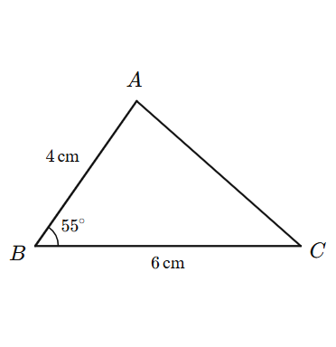
goc CBA = 60^{\circ} nếu hình chưa thật sự có góc 60°. Số ghi trên hình sẽ mâu thuẫn với hình vẽ. Hãy đặt thông số rồi dùng = ?.Đề bài: Cho hình bình hành ABCD. Phân giác góc A cắt DC tại M, phân giác góc C cắt AB tại N. Một người dùng viết kịch bản dưới đây và thấy hình "không đúng":
a = 5.6 b = 3.4 goc = 65 D = (0, 0) C = (a, 0) A = tron(D, b, goc) B = hbh(A, D, C) dagiac ABCD M = phangiac(B, D, C) N = phangiac(D, A, B) doan AM NC goc DAM MAB = ? # dòng kiểm tra
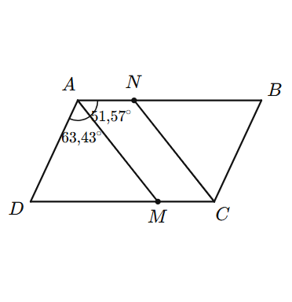
a = 5.6 b = 3.4 goc = 65 D = (0, 0) C = (a, 0) A = tron(D, b, goc) B = hbh(A, D, C) dagiac ABCD M = phangiacgoc(D, A, B, D, C) N = phangiacgoc(B, C, D, A, B) doan AM CN goc DAM MAB = ? goc BCN NCD = ?
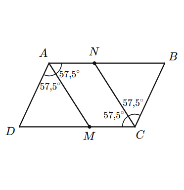
phangiac(B, D, C) dùng kiểu đỉnh viết trước: nó là chân phân giác của góc B trong tam giác BDC. Vì vậy M là điểm mà BM là phân giác góc B, không liên quan tới góc A. Nối AM nên AM không phải phân giác (kiểm tra: 63,43° ≠ 51,57°).phangiac(D, A, B) cho phân giác góc D, nên NC không phải phân giác góc C. Đây là lý do người dùng thấy hình "giống phân giác góc B và D".phangiac chỉ dùng cho tam giác (chân phân giác nằm trên cạnh đối diện). Trong hình bình hành, phân giác góc A cắt DC, không phải cạnh đối diện của một tam giác chứa góc A. Nên cần lệnh phangiacgoc(D, A, B, D, C): "phân giác góc DAB, cắt đường thẳng DC".= ?; (3) hình bình hành, hình thang… nên dựng bằng hbh, tinhtien để luôn đúng tính chất khi đổi thông số.Kịch bản đúng ở trên có sẵn thành hình mẫu Hình bình hành và các đường phân giác trong nhóm Tứ giác của danh sách Hình phẳng.
| Lệnh | Vẽ gì |
|---|---|
doan AB CD | Các đoạn thẳng AB, CD (viết doan ABC là AB và BC) |
dagiac ABCD | Đa giác khép kín |
netdut AH | Đoạn nét đứt |
duongthang AB · tia OA | Đường thẳng (kéo dài hai phía) · tia gốc O |
vecto AB | Vectơ có mũi tên |
duongtron O A · duongtron O 2.5 | Đường tròn tâm O qua A · bán kính 2,5 |
ngoaitiep ABC · noitiep ABC | Đường tròn ngoại tiếp · nội tiếp tam giác |
cung O A B · quat O A B | Cung tròn tâm O từ A đến B (ngược chiều kim đồng hồ) · hình quạt |
to ABC | Tô nền đa giác (thêm màu, vd to ABC xanh) |
goc BAC · goc BAC = 60^{\circ} · goc BAC = ? | Ký hiệu góc (đỉnh ở giữa); ghi chữ hoặc số đo thật; thêm x2 ở cuối để vẽ hai cung |
vuong AHC | Ký hiệu góc vuông tại H |
bang AB AC = 1 | Gạch đánh dấu đoạn bằng nhau (1, 2, 3 gạch) |
ssong AB CD | Dấu mũi tên song song |
ghi AB = 5\,cm · ghi AB = ? cm | Ghi độ dài bên cạnh đoạn |
diem M N | Chấm tròn tại điểm |
an P Q | Ẩn tên điểm (điểm phụ dùng để dựng) |
nhan A1 = A' · nhan D = x | Đổi tên hiển thị (vd đặt tên tia Ox) |
Màu và tên đường (dùng cho doan, netdut, duongthang, tia, vecto): thêm màu ở cuối dòng: do, xanh, xanhla, den, xam, cam, tim hoặc mã #e8423f; thêm tên sau dấu =: vecto AB = \vec{a} xanh.
r = 2.5 # Bán kính O = (0, 0) E = (r, 0) M = (6, 0) A = tiepdiem(M, O, r, 1) B = tiepdiem(M, O, r, 2) duongtron O E doan MA MB OA OB OM vuong OAM vuong OBM an E diem O
Điểm phụ E chỉ để có bán kính cho duongtron O E, nên được ẩn tên bằng an E.
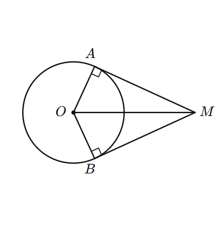
O = (0, 0) A = (3, 0.4) B = (4.2, 2) C = (2, 2.4) A1 = quay(A, O, 90) B1 = quay(B, O, 90) C1 = quay(C, O, 90) dagiac ABC doan A1B1 B1C1 C1A1 do netdut OA OA1 goc AOA1 = ? nhan A1 = A' nhan B1 = B' nhan C1 = C' diem O
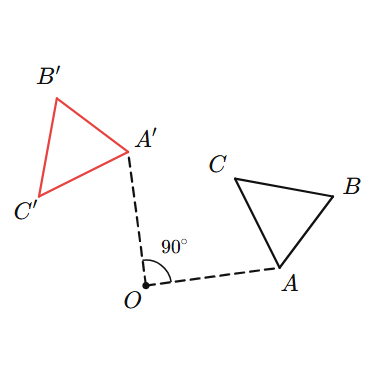
truc -1 5 -1 4 luoi
O = (0, 0)
A = (1, 1)
B = (4, 3)
vecto AB = \overrightarrow{AB} xanh
vecto OA = \vec{a} do
an Otruc xmin xmax ymin ymax luoi vẽ hệ trục Oxy có vạch chia, số và lưới. Toạ độ điểm trong kịch bản chính là toạ độ trên hệ trục.
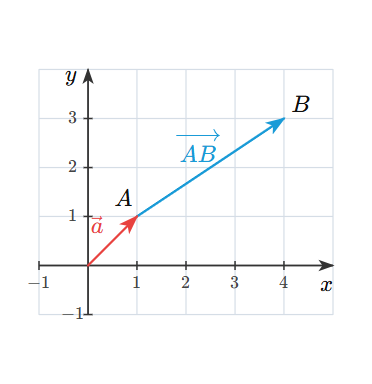
Hình không gian tự dựng (các mẫu lớp 11, lớp 12 trong danh sách Hình không gian) dùng cùng cách viết, thêm toạ độ thứ ba: (x, y, z) với x sang phải, y ra phía sau, z hướng lên.
a = 4 # Cạnh đáy h = 4 # SA A = (0, 0, 0) B = (a, 0, 0) D = (0, a, 0) C = (a, a, 0) S = (0, 0, h) doan AB BC SA SB SC netdut AD DC SD vuong SAB vuong SAD
Hình chóp, hình hộp: bạn tự khai báo cạnh khuất bằng netdut. Cạnh khuất là các cạnh đi ra từ đỉnh nằm phía sau, phía dưới (ở đây là D).
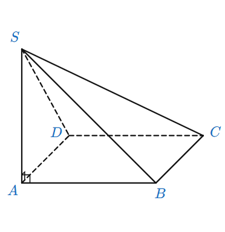
O = (0, 0, 0) mp P ngang O 8 5 A = (-0.8, 0.4, 2.6) B = (0.9, -0.3, -1.6) M = giao(A, B, P) duongthang AB = d do diem M an O A B
Với mặt phẳng, phần đường thẳng, cạnh bị mặt phẳng che sẽ tự vẽ nét đứt, bạn không cần khai báo.
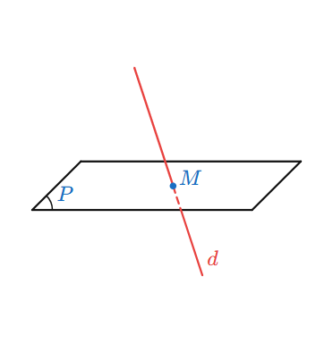
| Viết | Ý nghĩa |
|---|---|
chop S ABCD | Hình chóp; các cạnh khuất tự đứt nét theo các mặt của khối (không cần khai báo netdut) |
langtru ABCD A1B1C1D1 | Lăng trụ, hình hộp, lập phương, chóp cụt |
tudien ABCD · khoi ABC, ABD, ACD, BCD | Tứ diện · khối cho bằng danh sách mặt |
tru O O1 r · non O S r · noncut O O1 r1 r2 · cau O r | Khối tròn xoay (nên chọn Cách chiếu "Xoay tự do", Xoay ngang 0) |
tron(O, r, goc) | Điểm trên đường tròn nằm ngang tâm O |
doan AC SO) cũng tự đứt nét ở phần nằm sau các mặt của khối. Ví dụ 7 ở trên có thể viết gọn: chop S ABCD thay cho ba dòng doan / netdut.Khung Thuộc tính còn có mục Toạ độ các điểm (điểm cho bằng số) và Tên hiển thị của điểm (đổi tên, ẩn tên) để chỉnh hình mà không cần sửa chữ trong kịch bản.
| Viết | Ý nghĩa |
|---|---|
mp P ngang O 8 5 | Mặt phẳng nằm ngang, tâm O, rộng 8, sâu 5 |
mp Q dung O 6 4 30 | Mặt phẳng thẳng đứng, quay 30° quanh trục đứng |
mp Q nghieng O 6 4 50 | Mặt phẳng nghiêng 50° so với mặt nằm ngang |
mp R: A B C D | Mặt phẳng là đa giác qua các điểm đã có |
... lien · nhanmp P 2 | Cạnh luôn nét liền · đặt tên mặt phẳng ở góc thứ 2 (0 = ẩn); tên alpha hiện thành α |
chanmp(M, P) | Hình chiếu vuông góc của M lên (P) |
vuonggoc(H, P, 3) | Điểm trên đường vuông góc với (P) tại H, cách H một đoạn 3 (số âm: phía dưới) |
giao(A, B, P) · giao(A, B, C, D) | Giao của AB với (P) · giao của hai đường thẳng cắt nhau |
chieu(M, P, A, B) | Hình chiếu song song của M lên (P) theo phương AB |
trenmp(P, 0.3, 0.6) | Điểm nằm trên mặt phẳng P (toạ độ tương đối theo hai cạnh) |
trungdiem, chia, trongtam, tinhtien, hbh, chan, doixung, doixungmp, phangiacgoc | Như trong hình phẳng |
vitri A tren | Đặt tên điểm ở phía chỉ định: tren, duoi, trai, phai, trentrai, trenphai, duoitrai, duoiphai |
Khung Thuộc tính có mục Góc nhìn: chiếu xiên như SGK (đổi góc xiên, tỉ số rút gọn) hoặc xoay tự do.
oxyz
truc 4 4.5 4
O = (0, 0, 0)
M = (2, 3, 2.5)
toado M
vecto OM = \vec{u} do
oxyz (đặt ở đầu) cho phép nhập toạ độ đúng như SGK 12: Ox hướng về phía người nhìn, Oy sang phải, Oz lên trên.truc 4 4.5 4: vẽ ba trục với độ dài 4; 4,5; 4.toado M: vẽ hình chiếu M' của M xuống mặt (Oxy), các đường gióng nét đứt và ghi các toạ độ lên trục.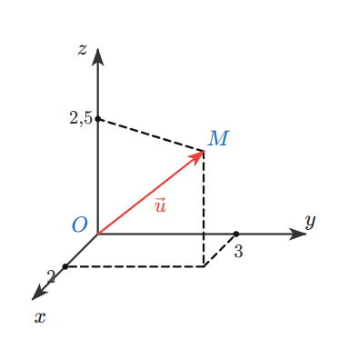
goc … = ?, ghi … = ?), đổi thử thông số để chắc hình vẫn đúng, rồi xoá dòng kiểm tra nếu không cần.| Thông báo / hiện tượng | Nguyên nhân và cách sửa |
|---|---|
| chưa có điểm X | Dùng X trước khi tạo, hoặc gõ sai tên (A1 khác A'). Đưa dòng tạo X lên trước. |
| không có phép dựng "…" | Sai tên phép dựng; xem bảng mục 3 và mục 9. Viết thường, không dấu. |
| toạ độ cần hai số / ba số | Hình phẳng dùng (x, y), hình không gian dùng (x, y, z). Số thập phân dùng dấu chấm: 2.5. |
| hai đường thẳng song song | giao của hai đường song song; kiểm tra lại các điểm. |
| ba điểm thẳng hàng · không dựng được tam giác | Thông số không tạo được hình (vd ba cạnh vi phạm bất đẳng thức tam giác). Đổi thông số. |
| Hình vẽ ra nhưng "sai quan hệ" | Thường do nhầm thứ tự điểm (mục 4). Thêm dòng goc … = ? để kiểm tra. |
| Tên điểm đè lên nét | Kéo hình to hơn; đổi vị trí điểm; ở hình không gian dùng vitri A tren; ẩn tên điểm phụ bằng an. |
| Số đo trên hình không khớp | Đừng gõ tay số đo; dùng thông số + = ? (mục 5). |
# thông số ten = 5 # Chú thích # điểm A = (x, y) trungdiem(A, B) chia(A, B, k) chan(M, A, B) phangiac(A, B, C) phangiacgoc(X, A, Y[, P, Q]) trongtam tructam tamnoi tamngoai giao(A, B, C, D) tinhtien(M, A, B) hbh(A, B, C) doixung(M, O) doixungtruc(M, A, B) quay(M, O, goc) tron(O, r, goc) dinh(B, C, c, b) tiepdiem(M, O, r, 1) # vẽ doan dagiac netdut duongthang tia vecto duongtron ngoaitiep noitiep cung quat to truc # ký hiệu goc vuong bang ssong ghi diem an nhan # màu: do xanh xanhla den xam cam tim
A = (x, y, z) oxyz # toạ độ kiểu SGK 12 truc 4 4 4 toado M mp P ngang O 8 5 mp Q dung O 6 4 30 mp Q nghieng O 6 4 50 mp R: A B C D nhanmp P 2 chanmp(M, P) vuonggoc(H, P, h) giao(A, B, P) giao(A, B, C, D) chieu(M, P, A, B) trenmp(P, u, v) doixungmp(M, P) doan netdut netlien duongthang tia vecto dagiac to goc vuong bang ghi diem an nhan vitri A tren duongthang AB = d do keo 0.3
x > 4 -2 < x <= 3 x < -1 hoặc x >= 2 [1; +oo) (-oo; 3/4] E = [1; +oo) E ∩ F A \ B A = 7/4 N = -sqrt(2) 4,1(6) Ven: A: 1; 3 AB: 4 ngoài: 9 tô: A ∩ B (A ∪ B) ∩ C E \ A